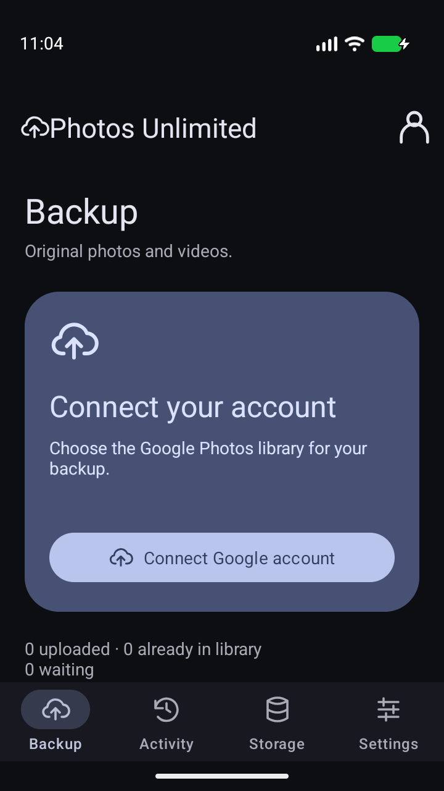

Seus arquivos originais
Envie os bytes originais da foto ou do vídeo. A permissão de localização da mídia também preserva a localização incorporada. Os arquivos continuam no seu celular.
Fotos + vídeosFotos e vídeos originais, do seu celular Android para o Google Fotos. Escolha o que é enviado e quando isso acontece.
App de envio experimental. O Google define a contabilização do armazenamento; a isenção de cota não é garantida.
Um app de envio dedicado
Deixe os envios com o Photos Unlimited. Use o Google Fotos para tudo o que você faz com a sua biblioteca.
Envie os bytes originais da foto ou do vídeo. A permissão de localização da mídia também preserva a localização incorporada. Os arquivos continuam no seu celular.
Fotos + vídeosSelecione pastas, limite os envios a redes sem tarifação por uso e espere até o celular estar carregando. Execute um backup manualmente sempre que precisar.
Você define o ritmoAs fotos vão direto para o Google. Seu login é criptografado no seu dispositivo. Não há nenhum servidor de contas do Photos Unlimited no meio do caminho.
Controles no dispositivoFeito para Android
Controles nativos do Material, cores do papel de parede e modo claro ou escuro. Encontre o que precisa sem vasculhar menus.

App real · Backup, tema escuro
Primeiros passos
Use o fluxo de configuração do Google no app. Há uma alternativa com token de configuração pelo navegador, caso o login incorporado não funcione.
Permita o acesso completo a fotos, vídeos e à localização da mídia. Selecione as pastas de que quer fazer backup, incluindo os arquivos que já estão nelas.
Desative o backup automático no app oficial Google Fotos e toque em Fazer backup agora no Photos Unlimited.
O Android controla o momento do trabalho em segundo plano. Configurações de rede, carregamento, bateria e inatividade podem atrasar os envios automáticos.
Gratuito e de código aberto
Baixe o APK assinado para Android e escolha o que será copiado.
Bom saber
Esta é uma versão inicial de um app independente. Veja o que esperar.
O app usa um protocolo móvel não documentado e solicita tratamento em qualidade original com um perfil de envio de Pixel. O Google controla a aceitação e a contabilização da cota; por isso, um envio aceito não garante isenção de armazenamento. Verifique envios de amostra novos e o uso real do armazenamento antes de depender dele. Correspondências já existentes mantêm a sua contabilização.
Sim, com o Liberar espaço. O original de cada item é verificado byte a byte com o checksum do próprio Google e mantido no seu celular antes de o item ser excluído e enviado de novo; assim, metadados incorporados, como data e localização, permanecem intactos. Desative primeiro o backup do Google Fotos. Álbuns, rostos e edições feitas dentro do Google Fotos não são mantidos. Comece com poucos itens.
O app envia os arquivos diretamente ao Google e mantém seu login criptografado no armazenamento privado do app no Android, fora do backup do Android. As fotos de perfil e o inventário de armazenamento opcional ficam em cache local. Uma vez por dia, enquanto o app está aberto, ele pergunta ao GitHub se existe uma versão mais nova; você pode desativar isso. Não há servidor de contas do projeto nem SDK de análise de uso. Leia as notas de privacidade.
Os envios principais foram usados em um aparelho real. Cada versão passa nos testes automatizados e em uma verificação de atualização assinada. A versão 1.0.0 também teve uma revisão de segurança independente. A contabilização de armazenamento em tempo real não está totalmente validada. O Google pode mudar os métodos não documentados. Transferências interrompidas reiniciam o arquivo. Fotos com movimento são compatíveis; Live Photos do iPhone em pares não são substituídas.